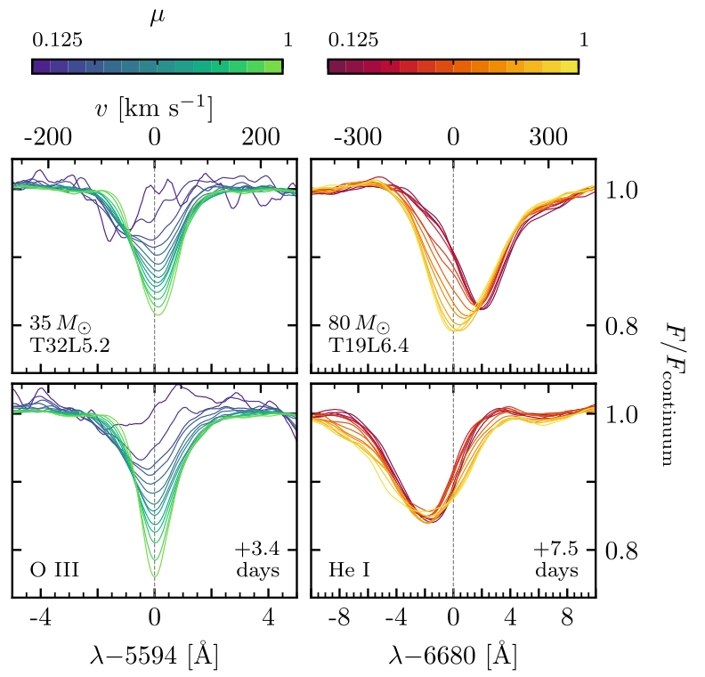
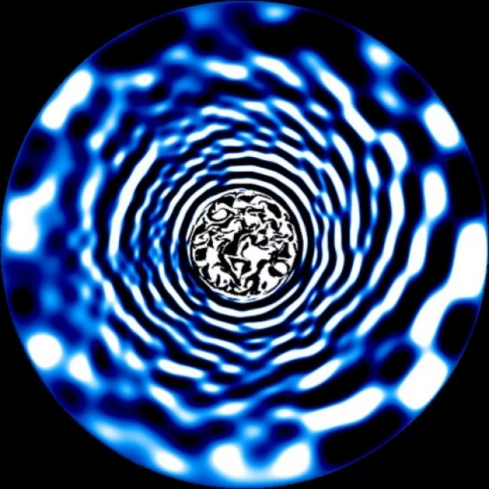
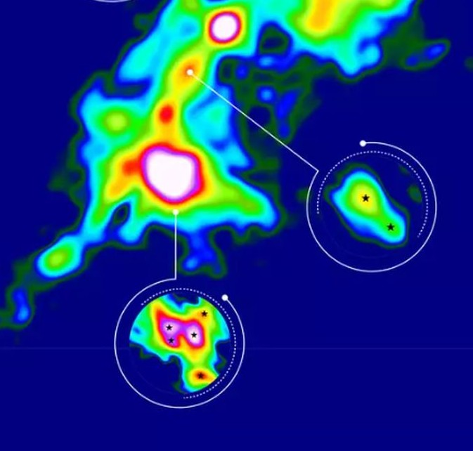

Research Interests
My research focuses on the spectroscopy of massive stars, with particular emphasis on understanding the physical origin of spectroscopic line profile variability and its connection to asteroseismology. As part of my PhD, I work on the modelling and interpretation of macroturbulence, pulsational variability, and turbulent subsurface convection, and how these processes shape stellar line profiles in high-resolution spectroscopy. More broadly, I am interested in how spectroscopic diagnostics and asteroseismology can be combined to constrain the internal structure, rotation, mixing, and evolutionary properties of massive stars. I also have a strong interest in binary stars and stellar multiplicity, and in how multi-technique approaches can improve our understanding of stellar evolution.
Research Themes


Ongoing Projects
Project Title One
Add a concise summary of an ongoing project here. This can briefly state the physical problem, data, modelling approach, and current scientific aim.
Project Title Two
Add another ongoing project summary here. Keep the style concise, professional, and scientifically clear.
Project Title Three
Add a third project here. This section can be expanded later as needed.
Access all work using NASA/ADS.